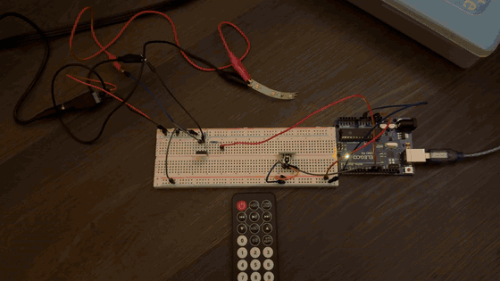
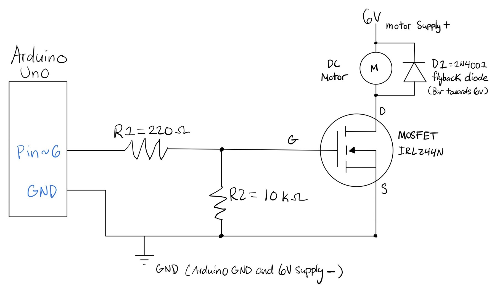
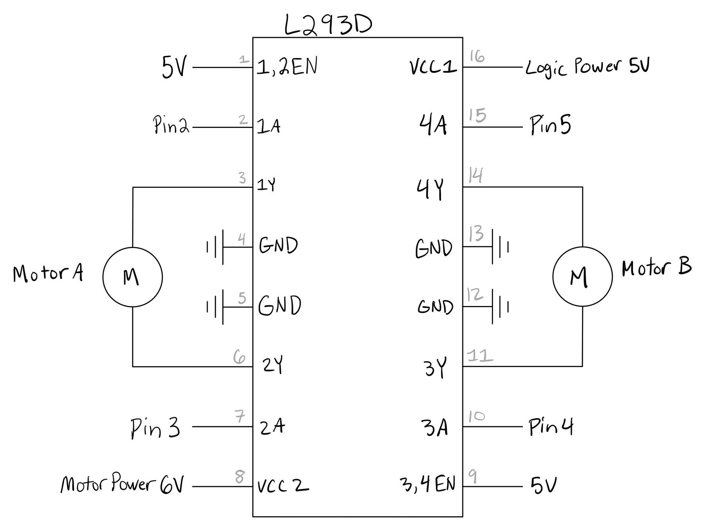

![Hand-drawn schematic: the Arduino Uno box lists 5V, Pin 11, Pin ~9 and GND. 5V goes to the IR receiver's VCC, and the receiver's OUT (signal) goes to Pin 11. Pin ~9 goes through R1 = 220 ohms to the Gate of a circled IRLZ44N MOSFET, with R2 = 10 kilohms from the Gate to ground; the Pin 9 wire hops over the receiver's GND wire. The MOSFET's Drain goes up to the minus side of a box labeled LED Strip (12V LED strip, 1 section, 3 LEDs), whose plus side goes to 12V from the adapter. The Source, R2, the receiver's GND and the Arduino GND all join one ground line with a ground symbol labeled Arduino GND and 12V adapter minus.](a5_schematic_hand.jpg)
HCDE 439 Physical Computing · an N-MOSFET switching load power separate from logic power
A remote-controlled LED strip dimmer. The Arduino's own 5 V only ever powers its own logic and the IR receiver; the 12 V LED strip is powered entirely from a separate 12 V/2 A AC–DC adapter, switched by an IRLZ44N N-MOSFET acting as a low-side switch. Pressing 1, 2 or 3 on the IR remote sets the strip to off, dim or full brightness via analogWrite(). It uses one library for the input (IRremote, for the IR receiver) and reuses the N-MOSFET circuit from our L9 in-class exercise for the output.
I checked the text printed on my transistor's body: it reads IRLZ44N. This matters because it's a logic-level N-MOSFET — its datasheet specifies full performance at VGS = 5 V. An ordinary N-MOSFET like the IRFZ44N (one letter different!) needs roughly 10 V on the Gate to fully turn on, which the Arduino's 5 V output can't supply on its own without an extra gate-driver stage. The IRLZ44N lets the Arduino drive the Gate directly.
The MOSFET's Gate acts like a small capacitor. Once it's charged, no current flows into it, but every time D9 switches it has to charge or discharge, and R1 limits how big that current spike is. R1 has to sit between two limits:
Any value above 125 Ω protects the pin, and a few hundred ohms still switches in a fraction of a percent of each cycle. Of the standard resistor values in our kits (100, 220, 330 Ω…), 220 Ω is the smallest one above 125 Ω; the next one down, 100 Ω, would allow 50 mA. It's also the gate resistor from our L9 in-class MOSFET circuit. The 22.7 mA peak is slightly above the pin's 20 mA continuous recommendation, but it lasts only microseconds per switch and stays under the 40 mA absolute maximum.
If the Gate were left floating (for example, during the instant after power-up before setup() has run pinMode() and digitalWrite()), stray noise could turn the MOSFET on unintentionally and flash the LED strip. R2 holds the Gate at a defined 0 V any time D9 isn't actively driving it. R2 also has to sit between two limits:
10 kΩ is comfortably above the 1,980 Ω minimum and still small enough to hold the Gate at 0 V. It's also the pulldown value from our L9 in-class circuit. Checking the actual divider with both resistors:
The IRLZ44N's datasheet lists VGS(th) (the voltage where it just starts to turn on) as 1.0–2.0 V. 4.89 V is 2.4–4.9× that threshold, which is what actually matters: the Gate needs to be driven well past threshold, not just above it, to reach the low RDS(on) the datasheet specifies at VGS = 5 V. The current this divider wastes is tiny and doesn't meaningfully load the Arduino pin:
My strip is a Lepro 12 V LED strip, model PR4100057-DW-US (6000 K daylight white). A full roll is 16.4 ft (5 m) with 300 SMD 2835 LEDs, and the label on the back of its box gives its ratings as 16 W, 12 V DC, 1.5 A. It can only be cut every 3 LEDs, because each 3-LED section is its own little circuit wired in parallel with the others across 12 V. I used one 3-LED section, the smallest piece you can cut. The roll holds 300 / 3 = 100 identical sections sharing the rated 1.5 A, so one section draws:
The 1.5 A on the label is the rated current; the 16 W power figure works out a bit lower (16 W / 12 V / 100 ≈ 13 mA per section). I use the higher 15 mA so every calculation below is the worst case.
At the dim setting, analogWrite(9, 90) keeps the MOSFET on for 90/255 of each PWM cycle, so the average current drops to about 15 mA × 90/255 ≈ 5.3 mA. During each “on” slice it's still the full 15 mA; PWM only changes how long it flows.
With the MOSFET fully on, its datasheet lists RDS(on) ≈ 0.025 Ω at VGS = 5 V. At 15 mA almost none of the 12 V is lost across the MOSFET itself:
So the strip gets essentially the full 12 V, and the MOSFET stays at room temperature with no heatsink (its rating is 110 W at TC = 25°C).
Why a transistor at all for only 15 mA? 15 mA is within what an Arduino pin can supply, but the problem is voltage, not current: each section has three LEDs in series with a small resistor and needs 12 V to light, and an Arduino pin can only output 5 V. The MOSFET lets the Arduino's 5 V signal switch the adapter's separate 12 V supply, and the same circuit would keep working for a longer piece of strip without changing anything on the Arduino side.
Measured from GND. “On” is full brightness (analogWrite(9, 255)); “off” is analogWrite(9, 0). At the dim setting each point switches between these two columns about 490 times a second, spending 90/255 ≈ 35% of the time in the “on” column.
| Point in the circuit | On (full) | Off | Where it comes from |
|---|---|---|---|
| Arduino 5V rail (logic) | 5 V | 5 V | USB power through the Arduino |
| 12V rail (load) | 12 V | 12 V | Sansun adapter |
| D9 pin | 5 V | 0 V | analogWrite() output |
| Gate (G, pin 1) | 4.89 V | 0 V | R1/R2 divider; R2 holds it at 0 V when off |
| Current out of D9 | 0.49 mA steady (22.7 mA peak for microseconds at each switch) | 0 | 4.89 V / 10 kΩ through R2; 5 V / 220 Ω peak through R1 |
| Drain (D, pin 2) | ≈ 0.4 mV | up to 12 V | On: 15 mA × 0.025 Ω. Off: no current flows, so the strip drops almost nothing and the MOSFET blocks the supply voltage, well under its 55 V VDSS rating |
| Source (S, pin 3) | 0 V | 0 V | Tied to GND |
| Across the LED strip section | ≈ 12 V | ≈ 0 V | 12 V rail minus the Drain voltage |
| Current through strip, Drain and Source | 15 mA | 0 | 1.5 A roll rating / 100 sections |
| IR receiver OUT → D11 | 5 V while idle; drops to 0 V in short pulses while a button signal arrives | The receiver's output is active-low; the library decodes the pulse pattern | |
Per the Infineon IRLZ44N datasheet, the absolute maximum continuous drain current is 47 A at TC = 25°C (33 A at 100°C, and a 160 A pulsed rating). My 15 mA load is a tiny fraction of that:
Even the whole 5 m roll is only rated for 1.5 A, and the Sansun adapter can't supply more than 2 A; 2 A / 47 A ≈ 4.3% of the MOSFET's maximum. So in this circuit the adapter's 2 A limit would run out long before the transistor's. The IRLZ44N wasn't chosen for its current capacity; it was chosen because it's the one N-MOSFET of the three listed in the assignment that's logic-level and can be driven directly from the Arduino's 5 V.
![Photo of the real circuit from above: an Elegoo Uno R3 at the top powered by USB; a long breadboard in the middle with the IRLZ44N MOSFET lying flat near the left, metal tab up, with two small resistors just above it, and the IR receiver module on the right; the 12V adapter's barrel-jack connector with a green screw terminal at the top left, its red and black leads running to the breadboard; a 3-LED piece of LED strip at the bottom held by red and black alligator clips; and the Elegoo IR remote on the right.](a5_circuit_photo.jpg)
Why I chose the values in the code:
analogWrite() needs a PWM pin (3, 5, 6, 9, 10 or 11 on an Uno). On an Uno the IRremote library uses the chip's Timer2 to time incoming IR signals, and Timer2 is also what makes the PWM on pins 3 and 11, so analogWrite() on those two pins stops working once the library is running (Arduino forum: IRremote breaks PWM on pin 11). D9 runs on Timer1 at about 490 Hz, so it's unaffected, and it's the pin from our L9 in-class circuit.analogWrite()'s 8-bit range: 0 keeps the MOSFET off for the whole PWM cycle (strip off) and 255 keeps it on for the whole cycle (full brightness).setup(), pinMode(GATE_PIN, OUTPUT) doesn't itself force a voltage — the pin keeps whatever state it already had (LOW, after reset). R2's pulldown independently keeps the physical Gate near 0 V the whole time, so the immediately-following digitalWrite(GATE_PIN, LOW) is just making that explicit in software before loop() starts.Sources: the IRremote library (Armin Joachimsmeyer, Ken Shirriff et al.; MIT license), whose SimpleReceiver example the IR-receiving lines follow; our HCDE 439 L9 in-class mosfet_strip sketch, which the MOSFET wiring and analogWrite() dimming are adapted from; and my Assignment 4, where I found the remote's button codes. The comments at the top of the code say the same.
// Sources: the IRremote library by Armin Joachimsmeyer, Ken Shirriff et al. (https://github.com/Arduino-IRremote/Arduino-IRremote, MIT license);
// the IR receive code (IrReceiver.begin / decode / resume) follows that library's SimpleReceiver example.
// The MOSFET Gate wiring and analogWrite() dimming are adapted from our HCDE 439 L9 in-class mosfet_strip sketch,
// and the remote button codes come from my Assignment 4.
// Include the IRremote library (install "IRremote" v4.x in the Library Manager); it decodes the remote's button signals
#include <IRremote.hpp>
// Digital pin wired to the IR receiver's OUT pin (see schematic)
const int IR_PIN = 11;
// PWM-capable digital pin wired through R1 (220 ohm) to the MOSFET's Gate
const int GATE_PIN = 9;
// Code the remote sends for button 1 (found in Assignment 4 by printing IrReceiver.decodedIRData.command to the Serial Monitor)
const int BTN_1 = 0x0C;
// Code the remote sends for button 2 (found the same way)
const int BTN_2 = 0x18;
// Code the remote sends for button 3 (found the same way)
const int BTN_3 = 0x5E;
// analogWrite() level for "off": 0 out of 255 = 0% duty cycle, so the MOSFET never turns on and the strip is dark
const int LEVEL_OFF = 0;
// analogWrite() level for "dim": 90 out of 255 = about 35% duty cycle (why 90 is explained on the webpage)
const int LEVEL_LOW = 90;
// analogWrite() level for "full": 255 out of 255 = 100% duty cycle, so the MOSFET stays on and the strip is at full brightness
const int LEVEL_HIGH = 255;
// setup() runs once when the Arduino powers on or is reset
void setup() {
// Start serial at 9600 baud so received button codes show in the Serial Monitor
Serial.begin(9600);
// Make the gate pin an output. On an Uno, pinMode(OUTPUT) does not by itself
// force a voltage: the pin keeps whatever logic level it last had (LOW after
// reset/power-up), and R2 (the 10k pulldown in the schematic) independently
// holds the MOSFET's Gate near 0 V the whole time setup() is running, so the
// strip stays off during this brief startup window no matter what.
pinMode(GATE_PIN, OUTPUT);
// Explicitly drive the gate pin LOW (0 V) so the MOSFET is OFF and the LED
// strip is dark the instant setup() finishes, before loop() ever runs
digitalWrite(GATE_PIN, LOW);
// Start the IR receiver listening on IR_PIN
IrReceiver.begin(IR_PIN);
}
// loop() runs over and over for as long as the board has power
void loop() {
// Check whether the IR receiver has decoded a new button press
if (IrReceiver.decode()) {
// Read the numeric command code sent by whichever button was pressed
int code = IrReceiver.decodedIRData.command;
// Print the code in hex so it's easy to confirm which button was pressed
Serial.println(code, HEX);
// Button 1 pressed...
if (code == BTN_1) {
// ...turn the LED strip fully off by driving the MOSFET's gate to 0 V
analogWrite(GATE_PIN, LEVEL_OFF);
// Button 2 pressed...
} else if (code == BTN_2) {
// ...set the strip to a low, dim brightness
analogWrite(GATE_PIN, LEVEL_LOW);
// Button 3 pressed...
} else if (code == BTN_3) {
// ...set the strip to full brightness
analogWrite(GATE_PIN, LEVEL_HIGH);
}
// Tell the IRremote library the code has been handled and it should listen for the next press
IrReceiver.resume();
}
}

analogWrite(9, 255)), dim (2, analogWrite(9, 90)) and off (1, analogWrite(9, 0)). The small red LED on the IR receiver module blinks each time it picks up a press. The strip runs entirely on the 12 V adapter's power while the Arduino stays on USB; the only thing the Arduino sends to the load side is the PWM signal on the MOSFET's Gate.My transistor's body reads IRLZ44N. In its TO-220 package, pin 1 is Gate, pin 2 is Drain, and pin 3 is Source, so the current between pins 2 and 3 is the drain current, ID. Per the Infineon IRLZ44N datasheet's absolute maximum ratings table, the continuous drain current is 47 A at TC = 25°C (derated to 33 A at 100°C case temperature, with a 160 A pulsed/surge rating). 47 A is the headline absolute-maximum figure.

| Component | Part | Datasheet |
|---|---|---|
| Arduino | Arduino Uno Rev3 | docs.arduino.cc |
| DC motor | Adafruit DC Toy/Hobby Motor – 130 size (4.5–9 VDC) | Adafruit product page / datasheet PDF |
| Flyback diode | 1N4001 rectifier diode | ON Semiconductor 1N4001–1N4007 datasheet |
| N-MOSFET | IRLZ44N (same part as the main circuit) | Infineon datasheet |
Why these parts and values:
analogWrite() could set the motor's speed. The resistors are the same values for the same reasons as the main circuit: the Gate and the Arduino pin are identical, and only the load changed.
Why these parts and values:
wait(2000): each step lasts 2 seconds so you can clearly see each direction before the next change. The exact time isn't critical.// direction for Motor A is set by the pair (IN_A1, IN_A2); Motor B by (IN_B1, IN_B2)
function motorA_forward() { set IN_A1 = HIGH, IN_A2 = LOW }
function motorA_backward() { set IN_A1 = LOW, IN_A2 = HIGH }
function motorB_forward() { set IN_B1 = HIGH, IN_B2 = LOW }
function motorB_backward() { set IN_B1 = LOW, IN_B2 = HIGH }
set EN1,2 = HIGH, EN3,4 = HIGH // enable both H-bridge channels
// both motors forward
motorA_forward(); motorB_forward(); wait(2000)
// both motors backward
motorA_backward(); motorB_backward(); wait(2000)
// motor A forward, motor B backward
motorA_forward(); motorB_backward(); wait(2000)
// motor A backward, motor B forward
motorA_backward(); motorB_forward(); wait(2000)
I used Claude to help me pick an idea, to choose component values (the brightness levels), working through the gate-voltage-divider and current/power calculations, looking up and verifying the exact numbers from the IRLZ44N datasheet (pin numbering, absolute maximum current, RDS(on), VGS(th)) since I didn't want to guess at datasheet figures, checking the three schematic diagrams, drafting and commenting the Arduino sketch, drafting my answers to Q1-3, turning demo into a GIF, finding real datasheet links for Question 2's parts, and laying out this page in HTML. I built and tested the circuit, chose and confirmed the pins, and took the photos and video myself.
Reflection: Claude is very helpful in laying out this page in html, checking my work, and seeing if I missed anything. I also double checked the html output to check for errors.
Prompts I used: